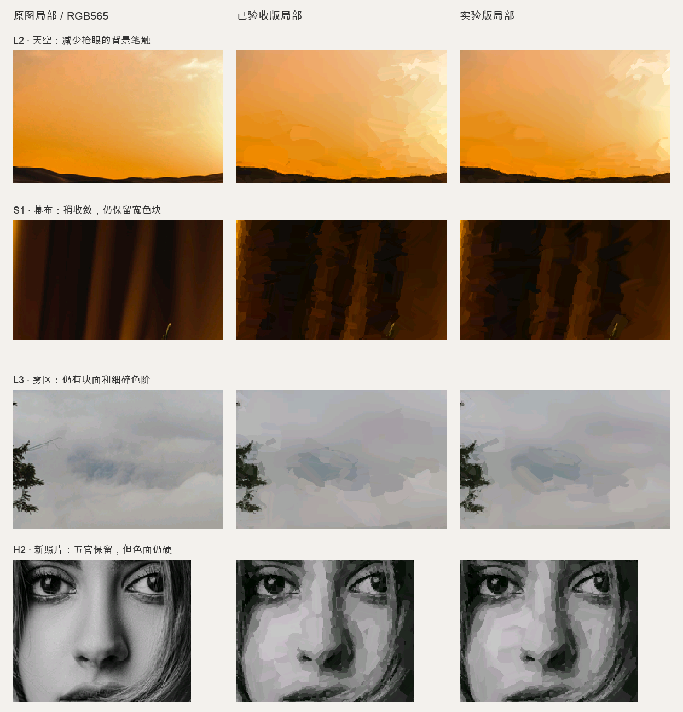

结论：局部改善，尚不足以默认替换已验收版。天空、幕布有所收敛；雾区色阶带和低反差五官没有解决。所有图是实际 C++ 算法输出，未使用 AI 生成或后期修图。
九张开发回归图：原图 / 已验收 / 实验 + 四组消融
三张新照片：冻结参数后验证
技术记录与限制 ·
指标摘要 · 主机计时
以下局部包含改善与遗留问题。裁切仅用于看清差异，不是算法输入，也未用于指标评分。全图见上述图册。

这是 RGB565 阶段，不是 Spectra 6 实屏效果。四组测试均可复现且通过 ASan/UBSan，但不代表审美验收。 主机计时包含进程启动和文件读写，不能推算设备耗时。固件、烧录包和 OS 分支未更改。